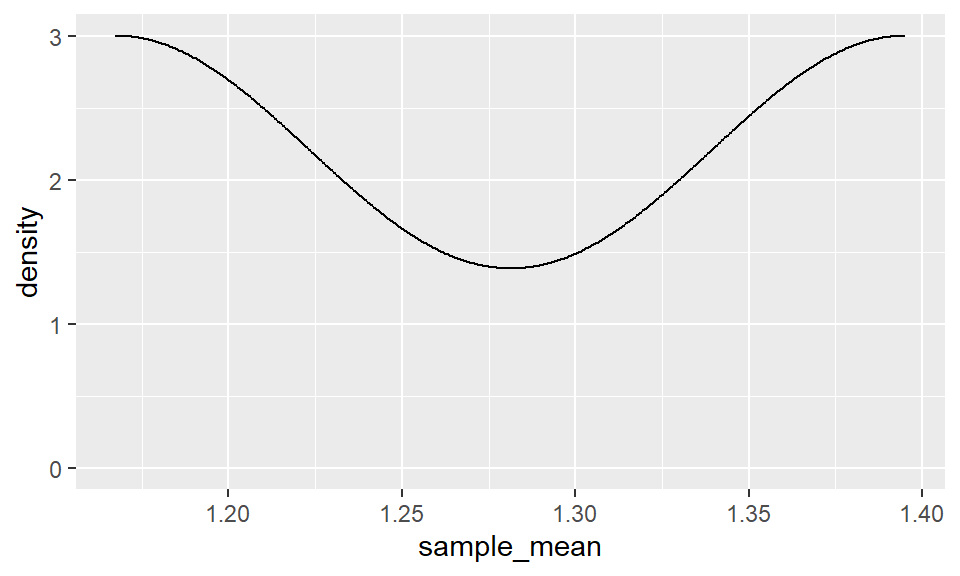
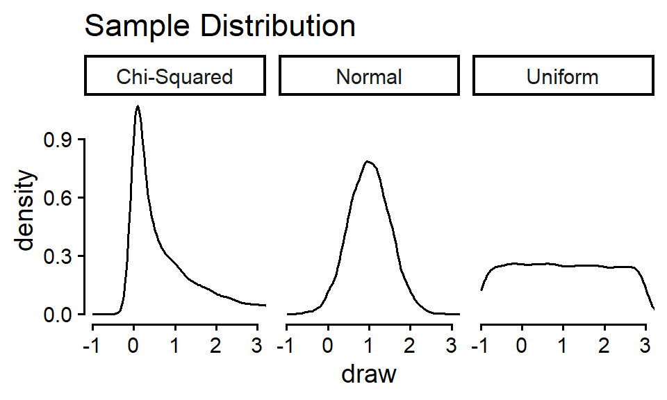
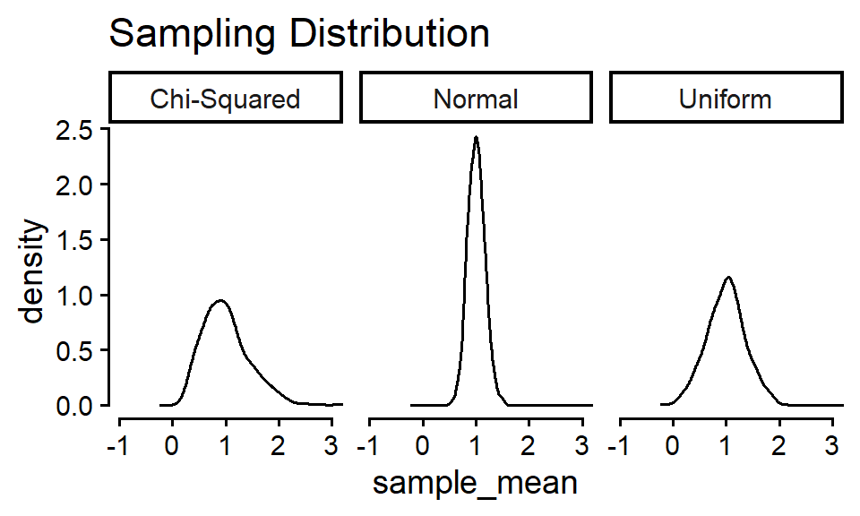
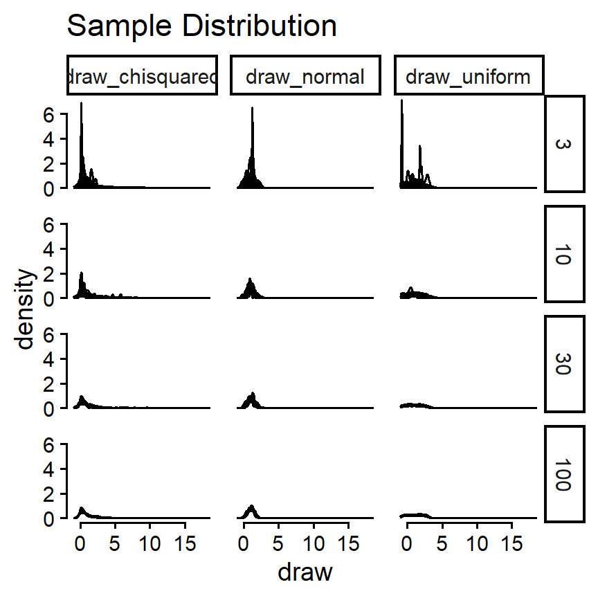
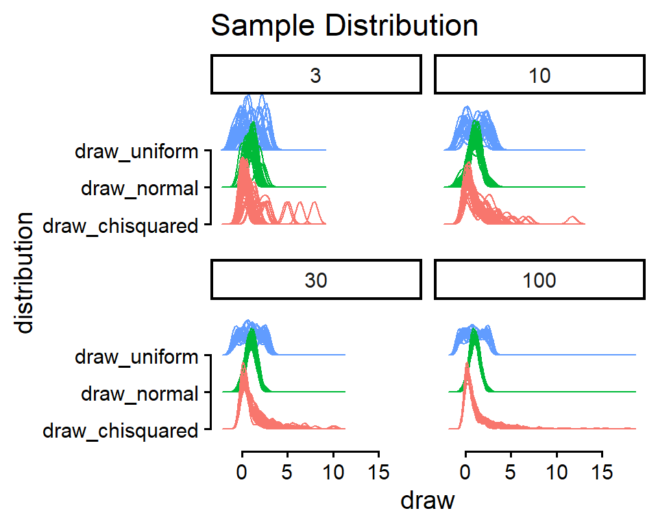
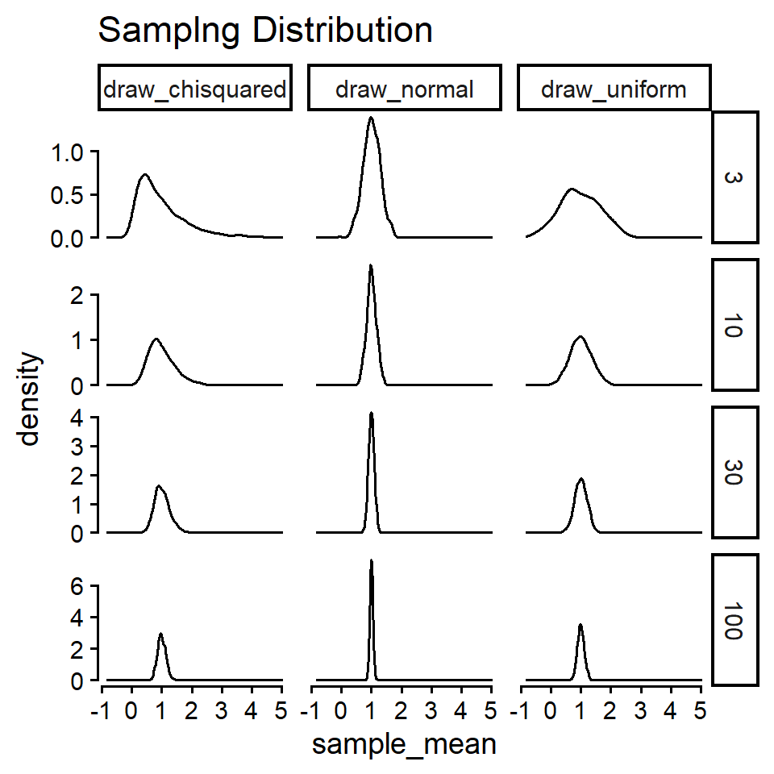
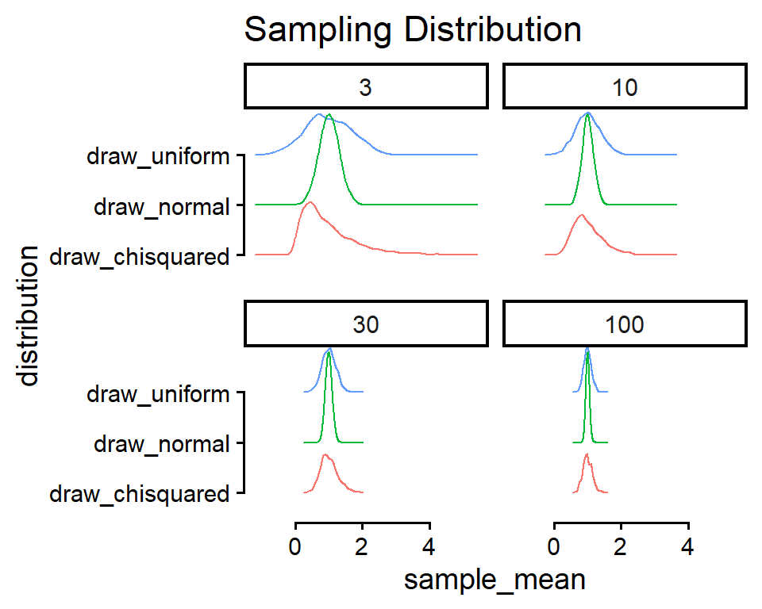

# A tibble: 6 × 4
country year cases population
<chr> <dbl> <dbl> <dbl>
1 Afghanistan 1999 745 19987071
2 Afghanistan 2000 2666 20595360
3 Brazil 1999 37737 172006362
4 Brazil 2000 80488 174504898
5 China 1999 212258 1272915272
6 China 2000 213766 1280428583Data Manipulation and Simulation
PSYC 6019-A01 / PSYC 6022-A01
2025-09-11 | Lab 3
Outline
- Data manipulation with the
tidyverse - Simulating data introduction
- Central Limit Theorem example
Extra Credit: R Conference
Whole Game
Pieces of the “whole game” of data science

Whole Game
Import → Tidy → Transform → Visualize → Model → Communicate
Tidy
Refers to tidy data
“Happy families are all alike; every unhappy family is unhappy in its own way.”
— Leo Tolstoy
“Tidy datasets are all alike, but every messy dataset is messy in its own way.”
— Hadley Wickham
Tidy data follow a consistent set of organizational principles
Typically a bit more work up front but much easier to work with after
Tidy
# A tibble: 12 × 4
country year type count
<chr> <dbl> <chr> <dbl>
1 Afghanistan 1999 cases 745
2 Afghanistan 1999 population 19987071
3 Afghanistan 2000 cases 2666
4 Afghanistan 2000 population 20595360
5 Brazil 1999 cases 37737
6 Brazil 1999 population 172006362
7 Brazil 2000 cases 80488
8 Brazil 2000 population 174504898
9 China 1999 cases 212258
10 China 1999 population 1272915272
11 China 2000 cases 213766
12 China 2000 population 1280428583# A tibble: 6 × 3
country year rate
<chr> <dbl> <chr>
1 Afghanistan 1999 745/19987071
2 Afghanistan 2000 2666/20595360
3 Brazil 1999 37737/172006362
4 Brazil 2000 80488/174504898
5 China 1999 212258/1272915272
6 China 2000 213766/1280428583All of these dataframes contain the same information, but one of them is much easier to work with…
Why?
Tidy: Principles
Three rules to a tidy dataset
Each variable is a column; each column is a variable.
Each observation is a row; each row is an observation.
Each value is a cell; each cell is a single value.

Tidy: Why Tidy?
- Consistency! Any sort of consistency in your data management will be beneficial.
- R loves vectors! Having variables in columns plays well with many functions.
- Cohesion with an ecosystem of R packages that expect tidy data.
tidyverse Expectations
The tidyverse website mentioned that each package shares a common language for their functions
Based off of dplyr (one of the packages) verbs
- The first argument is always a dataframe.
- The subsequent arguments typically describe which columns to operate on using the variable names (without quotes).
- The output is always a new data frame.
tidyverse Syntax
One more thing…
tidyverse verbs work best in a pipe: |>
How we’ve been using functions:
output <- function(input)
Functions in a pipe:
output <- input |> function()
Why is this helpful?
Many functions together:
another_function(other_function(function(input)))Functions in a pipe:
input |>
function() |>
other_function() |>
another_function()Long vs. Wide Data
Long: each observation is a row (tidy)
○ Observation does not necessarily mean “person”
○ Can be within-person measurements over time
Wide: columns might represent different “values” of a variables
Long vs. Wide Data
# A tibble: 9 × 3
person book score
<chr> <chr> <int>
1 Harry book 1 2
2 Harry book 2 3
3 Harry book 3 1
4 Ron book 1 2
5 Ron book 2 2
6 Ron book 3 2
7 Hermione book 1 3
8 Hermione book 2 1
9 Hermione book 3 2# A tibble: 3 × 4
person `book 1` `book 2` `book 3`
<chr> <int> <int> <int>
1 Harry 2 3 1
2 Ron 2 2 2
3 Hermione 3 1 2Wide data common in spreadsheets, data from survey platforms
Long data typically easier to work with
Key Functions
Wide to Long
pivot_longer()
○
data = a dataframe to pivot
○
cols = set of columns to pivot
○
names_to = name of new column with the column names from before
○
values_to = name of new column with the values from before
Long to Wide
pivot_wider()
○
data = a dataframe to pivot
○
names_from = column with values to be column names
○
values_from = column with values to be in those columns
Key Functions
Wide to Long
pivot_longer()
longdat <- dat |>
pivot_longer(cols = c("book 1", "book 2", "book 3"),
names_to = "book", values_to = "score")
longdat# A tibble: 9 × 3
person book score
<chr> <chr> <int>
1 Harry book 1 2
2 Harry book 2 3
3 Harry book 3 1
4 Ron book 1 2
5 Ron book 2 2
6 Ron book 3 2
7 Hermione book 1 3
8 Hermione book 2 1
9 Hermione book 3 2Long to Wide
pivot_wider()
widedat <- longdat |>
pivot_wider(names_from = book, values_from = score)
widedat# A tibble: 3 × 4
person `book 1` `book 2` `book 3`
<chr> <int> <int> <int>
1 Harry 2 3 1
2 Ron 2 2 2
3 Hermione 3 1 2Some Examples: Example 1
table1# A tibble: 6 × 4
country year cases population
<chr> <dbl> <dbl> <dbl>
1 Afghanistan 1999 745 19987071
2 Afghanistan 2000 2666 20595360
3 Brazil 1999 37737 172006362
4 Brazil 2000 80488 174504898
5 China 1999 212258 1272915272
6 China 2000 213766 1280428583Looks good!
Some Examples: Example 2
table2# A tibble: 12 × 4
country year type count
<chr> <dbl> <chr> <dbl>
1 Afghanistan 1999 cases 745
2 Afghanistan 1999 population 19987071
3 Afghanistan 2000 cases 2666
4 Afghanistan 2000 population 20595360
5 Brazil 1999 cases 37737
6 Brazil 1999 population 172006362
7 Brazil 2000 cases 80488
8 Brazil 2000 population 174504898
9 China 1999 cases 212258
10 China 1999 population 1272915272
11 China 2000 cases 213766
12 China 2000 population 1280428583To RStudio!!
Some Examples: Example 2
Example code
table2 |>
pivot_wider(names_from = type, values_from = count)# A tibble: 6 × 4
country year cases population
<chr> <dbl> <dbl> <dbl>
1 Afghanistan 1999 745 19987071
2 Afghanistan 2000 2666 20595360
3 Brazil 1999 37737 172006362
4 Brazil 2000 80488 174504898
5 China 1999 212258 1272915272
6 China 2000 213766 1280428583More examples later!
Selecting Functions
Sometimes, we want to select many columns (to pivot, to remove, etc.)
Notice the documentation for pivot_longer()
<tidy-select> functions
○ e.g.,
starts_with(), ends_with(), everything()
Selecting Functions
Simple example, but…
dat <- data.frame(
id = 1:5,
Q1 = rbinom(5, 1, .1),
Q2 = rbinom(5, 1, .2),
Q3 = rbinom(5, 1, .3),
Q4 = rbinom(5, 1, .4),
Q5 = rbinom(5, 1, .5)
)
dat id Q1 Q2 Q3 Q4 Q5
1 1 0 1 0 0 0
2 2 0 0 0 1 0
3 3 0 1 0 0 0
4 4 1 1 1 1 1
5 5 0 1 1 0 1dat |>
pivot_longer(cols = starts_with("Q"),
names_to = "question", values_to = "correct")# A tibble: 25 × 3
id question correct
<int> <chr> <int>
1 1 Q1 0
2 1 Q2 1
3 1 Q3 0
4 1 Q4 0
5 1 Q5 0
6 2 Q1 0
7 2 Q2 0
8 2 Q3 0
9 2 Q4 1
10 2 Q5 0
# ℹ 15 more rowsTidy: Is Our Data Tidy?
player_stats <- read.csv(here::here("lab", "data", "lab_02", "world_cup_player_stats.csv"))
head(player_stats, n = 10) team_name fifa_code player_name position matches_played matches_started minutes_played goals assists
1 Mexico MEX José Raúl Rangel GK 5 5 438 0 0
2 Mexico MEX Jorge Eduardo Sanchez DEF 5 5 439 0 1
3 Mexico MEX César Jasib Montes DEF 3 2 165 0 0
4 Mexico MEX Edson Omar Alvarez DEF 2 0 75 0 0
5 Mexico MEX Johan Felipe Vasquez DEF 2 2 180 0 0
6 Mexico MEX Erik Antonio Lira MID 5 5 450 0 1
7 Mexico MEX Luis Francisco Romo MID 4 2 194 1 1
8 Mexico MEX Álvaro Fidalgo MID 2 0 41 1 0
9 Mexico MEX Raúl Alonso Jimenez FWD 3 2 193 3 0
10 Mexico MEX Ernesto Alexis Vega FWD 0 0 0 0 0
yellow_cards red_cards own_goals saves goals_conceded
1 0 0 0 7 3
2 0 0 0 NA NA
3 0 1 0 NA NA
4 1 0 0 NA NA
5 0 0 0 NA NA
6 1 0 0 NA NA
7 0 0 0 NA NA
8 0 0 0 NA NA
9 0 0 0 NA NA
10 0 0 0 NA NAEach variable is a column; each column is a variable.
Each observation is a row; each row is an observation.
Each value is a cell; each cell is a single value.
Whole Game
Import → Tidy → Transform → Visualize → Model → Communicate
Transform
Usually, our data doesn’t come to us with the variables exactly as we want them
Sometimes we need…
New variables, based on our existing data or otherwise
Summarized version of our dataset
Reordered variables
Transform: Goals For Our Data
My questions:
What team had the most goals overall?
What goalie had the highest saves per match played?
Class question!! (time pending)
Transform: Functions
A core few of the tidyverse functions…
select(df, columns)
Selects just the columns you specify. Helpful for paring down data for easier viewing.
player_minutes_played <- player_stats |>
select(player_name, minutes_played)
player_minutes_played |>
head() player_name minutes_played
1 José Raúl Rangel 438
2 Jorge Eduardo Sanchez 439
3 César Jasib Montes 165
4 Edson Omar Alvarez 75
5 Johan Felipe Vasquez 180
6 Erik Antonio Lira 450mutate(df, new_column = ...)
Adds new columns to the dataframe, either from scratch or based on existing columns. Can modify / overwrite existing columns as well.
player_minutes_played |>
mutate(hours_played = minutes_played / 60,
hours_played_rounded = round(hours_played, 2)) |>
head() player_name minutes_played hours_played hours_played_rounded
1 José Raúl Rangel 438 7.300000 7.30
2 Jorge Eduardo Sanchez 439 7.316667 7.32
3 César Jasib Montes 165 2.750000 2.75
4 Edson Omar Alvarez 75 1.250000 1.25
5 Johan Felipe Vasquez 180 3.000000 3.00
6 Erik Antonio Lira 450 7.500000 7.50filter(df, condition_to_keep)
player_minutes_played |>
filter(minutes_played > quantile(minutes_played, probs = .99)) |>
head() player_name minutes_played
1 Lamine Yamal Yamal 616
2 Pedro Pedri 638
3 Marc Cucurella 750
4 Dayotchanculle Oswald Upamecano 661
5 Jules Olivier Kounde 605
6 Kylian Mbappe 711filter_out(df, condition_to_toss) does the opposite (as you’d expect by the name)
player_minutes_played |>
nrow()[1] 1248player_minutes_played |>
filter_out(minutes_played == 0) |>
nrow()[1] 1039| Symbol | Meaning |
|---|---|
== |
equal to |
!= |
not equal to |
< |
less than |
<= |
less than or equal to |
> |
greater than |
>= |
greater than or equal to |
1 == 1; "A" == "A"[1] TRUE[1] TRUE9 + 10 > 5[1] TRUE"Georgia Tech" != "Georgia State"[1] TRUEc(1, 2, 3) >= c(3, 2, 1)[1] FALSE TRUE TRUEsummarize(df, .by = optional_grouping_variable, new_column = ...)
player_minutes_played |>
summarize(mean = mean(minutes_played),
median = median(minutes_played),
min = min(minutes_played),
max = max(minutes_played)) mean median min max
1 168.9976 146 0 750player_stats |>
summarize(.by = team_name,
total_minutes_played = sum(minutes_played)) |>
head() team_name total_minutes_played
1 Mexico 5250
2 South Africa 3960
3 South Korea 2970
4 Czechia 2970
5 Canada 4981
6 Bosnia and Herzegovina 3961arrange(ordering_var)
Orders data based on some variable. Can use desc() (descending) to flip.
player_stats |>
select(team_name, player_name, minutes_played) |>
arrange(player_name) |>
head() team_name player_name minutes_played
1 Iraq Aamar Iqbal Zidane 188
2 Scotland Aaron Buchanan Hickey 75
3 Uzbekistan Abbosbek Fayzullaev 223
4 Egypt Abdelaziz Mohame Mostafa 390
5 Egypt Abdelaziz Moustafa Ramy Rabia 368
6 Egypt Abdelghaffar Abdel Tarek Alaa 0player_stats |>
select(team_name, player_name, minutes_played) |>
arrange(desc(minutes_played)) |>
head() team_name player_name minutes_played
1 Spain Marc Cucurella 750
2 Argentina Alexis Mac Allister 720
3 France Kylian Mbappe 711
4 France Michael Akpovie Olise 668
5 Argentina Enzo Jeremías Fernandez 663
6 France Dayotchanculle Oswald Upamecano 661Transform: Questions
- What team had the most goals overall?
total_goals_df <- player_stats |>
summarize(.by = team_name,
total_goals = sum(goals))
total_goals_df |>
arrange(desc(total_goals)) |>
head(10) team_name total_goals
1 France 20
2 England 20
3 Argentina 18
4 Belgium 13
5 Spain 13
6 Norway 12
7 Germany 11
8 Mexico 10
9 Switzerland 10
10 Brazil 10total_goals_df |>
filter(total_goals == max(total_goals)) team_name total_goals
1 France 20
2 England 20Transform: Questions
- What goalie had the highest saves per match played?
player_stats$position |> unique()[1] "GK" "DEF" "MID" "FWD"player_stats |>
filter(position == "GK") |>
filter(matches_played > 0) |>
select(team_name, player_name, saves, matches_played) |>
mutate(saves_per_match = saves / matches_played) |>
arrange(desc(saves_per_match)) |>
head() team_name player_name saves matches_played saves_per_match
1 Curaçao Eloy Victor Room 25 3 8.333333
2 Sweden Jacob Mikael Widell Zetterstrom 13 2 6.500000
3 Ecuador Hernán Ismael Galindez 25 4 6.250000
4 Tunisia Abdelmouhib Chamakh 6 1 6.000000
5 New Zealand Maxime Teremoana Crocombe 18 3 6.000000
6 Saudi Arabia Khalil Mohammed Alowais 18 3 6.000000Transform: Questions
- Class question!! (time pending)
Simulation
Simulation
Simulating fake data is such a helpful skill to have in your toolbox. You can…
- Check that methods are working correctly
rnorm(1000000, 5, 10) |> mean()[1] 4.990749- Build your intuition and understanding about statistical theory

n_reps <- 100000
tibble(n = n_reps,
sd = c(1, 1.25, 1.5)) |>
uncount(n_reps) |>
mutate(draw = rnorm(n(), 0, sd)) |>
ggplot(aes(x = draw, group = factor(sd))) +
geom_density(alpha = 0.4, color = NA, fill = "steelblue") +
geom_text(
data = tibble(sd = c(1, 1.25, 1.5),
height = dnorm(0, 0, sd) * 0.875,
draw = 0),
aes(label = paste("SD =", sd), y = height),
color = "white", fontface = "bold", size = 4.5
) +
guides(y = guide_none(NULL),
x = guide_axis(NULL, cap = T),
color = guide_legend("SD")) +
coord_cartesian(xlim = c(-4, 4)) +
theme_classic() +
theme(legend.position = "bottom")- Answer your own questions about a statistical concept
Let’s do that today!
Simulation Example: CLT
The Central Limit Theorem (CLT) says that the sampling distribution of the mean of any distribution with finite mean and variance will converge to be normal with increasing sample size.
○ Imagine: take a sample of \(N\) observations from the population, calculate some statistics (e.g., the mean), and toss them back.
○ Repeat a whole bunch of times
○ Sampling distribution: the distribution of those calculated statistics (e.g., means)
Let’s say we’re not so sure, and we want to test this out with different distributions and sample sizes \(N\).
Simulation Example: CLT
Before simulating, define your goals / questions.
Questions
Does the sampling distribution of the mean really converge to normal for wonky asymmetrical distributions like the \(\chi^2\) distribution?
At what sample sizes does this fail?
Goals
See if the distribution of means from repeatedly sampling data looks normal
○ Does this change with different original distributions from which the data is drawn?
Simulation Example: CLT
Then, sketch out a plan. Try to build things up step-by-step, not all at once.
Start with data sampled from a normal distribution. Generate one sample of data, take its mean.
Repeat this process multiple times, generating replications of data samples and sample means.
Visualize both: the original distribution of the data (sample distribution), the distribution of the the samples’ means (sampling distribution).
Incorporate different distributions.
Simulation Example: CLT
- Start with data sampled from a normal distribution. Generate one sample of data, take its mean.
rnorm(x, mean, sd) where x is the number of samples
library(tidyverse)
samples <- rnorm(3, mean = 1, sd = 0.5)
samples[1] 0.4618278 -0.6359861 0.7695585mean(samples)[1] 0.1984667Instead of having it in a vector by itself, lets put it in a dataframe
sim_data <- tibble(x = rnorm(3, mean = 1, sd = 0.5))
sim_data# A tibble: 3 × 1
x
<dbl>
1 0.604
2 0.597
3 0.811mean(sim_data$x)[1] 0.670636
Note
tibble()
A tibble() is just like a dataframe, but better. The best part is its printing—tibble()s will never crowd your screen by trying to show every single value of a dataframe. Also, they work better with making tibbles in tibbles in tibbles… More on tibbles here.
Simulation Example: CLT
- Repeat this process multiple times, generating replications of data samples and sample means.
Let’s specify the sample size and how many replications we want. Start small!
n_reps <- 2
sample_size <- 3
# total number of simulated draws
total_n <- n_reps * sample_sizeLet’s create a tibble with a row for every index in every replication.
sim_data <- tibble(
n_reps = n_reps,
sample_size = sample_size
) |>
uncount(n_reps, .id = "rep") |>
uncount(sample_size, .id = "index")
sim_data# A tibble: 6 × 2
rep index
<int> <int>
1 1 1
2 1 2
3 1 3
4 2 1
5 2 2
6 2 3Simulation Example: CLT
- Repeat this process multiple times, generating replications of data samples and sample means.
We can then draw n_reps * sample_size = total_n values from a normal distribution with rnorm().
# A tibble: 6 × 3
rep index draw
<int> <int> <dbl>
1 1 1 0.827
2 1 2 0.916
3 1 3 1.34
4 2 1 1.50
5 2 2 1.23
6 2 3 1.17 And, we can plot those draws (getting a head start on #3).
sim_data |>
ggplot(aes(x = draw)) +
geom_density()
Simulation Example: CLT
- Repeat this process multiple times, generating replications of data samples and sample means.
Let’ finish out #2 by summarize()ing our sim_data into one sample mean per replication.
means <- sim_data |>
summarize(.by = rep,
sample_mean = mean(draw))
means# A tibble: 2 × 2
rep sample_mean
<int> <dbl>
1 1 1.03
2 2 1.30Simulation Example: CLT
- Visualize both: the original distribution of the data (sample distribution), the distribution of the the samples’ means (sampling distribution).
Let’ finish out #2 by summarize()ing our sim_data into one sample mean per replication.
means <- sim_data |>
summarize(.by = rep,
sample_mean = mean(draw))
means# A tibble: 2 × 2
rep sample_mean
<int> <dbl>
1 1 1.03
2 2 1.30And, we can plot those draws (getting a head start on #4).
means |>
ggplot(aes(x = sample_mean)) +
geom_density()
Simulation Example: CLT
Before we start incorporating other conditions, let’s scale this up.
We can then draw n_reps * sample_size = total_n values from a normal distribution with rnorm().
# A tibble: 6 × 3
rep index draw
<int> <int> <dbl>
1 1 1 1.32
2 1 2 0.683
3 1 3 1.43
4 1 4 0.0515
5 1 5 1.32
6 1 6 1.19 And grab their means.
means <- sim_data |>
summarize(.by = rep,
sample_mean = mean(draw))
means# A tibble: 1,000 × 2
rep sample_mean
<int> <dbl>
1 1 1.07
2 2 1.12
3 3 1.39
4 4 0.796
5 5 1.16
6 6 0.777
7 7 0.874
8 8 1.13
9 9 1.24
10 10 1.03
# ℹ 990 more rowsSimulation Example: CLT
Plotting both the sample distribution and sampling distributions…

sim_data |>
ggplot(aes(x = draw)) +
geom_density() +
theme_classic(base_size = 14) +
coord_cartesian(xlim = c(-1, 3)) +
guides(x = guide_axis(cap = T),
y = guide_axis(cap = T),
color = guide_none()) +
labs(title = "Sample Distribution")
means |>
ggplot(aes(x = sample_mean)) +
geom_density() +
theme_classic(base_size = 14) +
coord_cartesian(xlim = c(-1, 3)) +
guides(x = guide_axis(cap = T),
y = guide_axis(cap = T),
color = guide_none()) +
labs(title = "Sampling Distribution")Simulation Example: CLT
- Incorporate different distributions.
runif(x, min, max) where all values between min and max have an equal chance of being sampled
uniform_samples <- runif(5, min = -1, max = 3)
uniform_samples[1] 2.2477310 0.8517492 0.2702443 1.3616476 -0.3349845rchisq(x, df) where df is the degrees of freedom for the distribution
chisquared_samples <- rchisq(5, df = 1)
chisquared_samples[1] 6.1014471 0.4996796 0.5737407 1.1180225 0.3602728Simulation Example: CLT
- Incorporate different distributions.
n_reps <- 1000
sample_size <- 10
total_n <- n_reps * sample_size
sim_data <- tibble(
n_reps = n_reps,
sample_size = sample_size
) |>
uncount(n_reps, .id = "rep") |>
uncount(sample_size, .id = "index") |>
mutate(
draw_normal = rnorm(total_n, mean = 1, sd = 0.5),
draw_uniform = runif(total_n, min = -1, max = 3),
draw_chisquared = rchisq(total_n, df = 1)
)
sim_data |> head(3)# A tibble: 3 × 5
rep index draw_normal draw_uniform draw_chisquared
<int> <int> <dbl> <dbl> <dbl>
1 1 1 1.37 2.59 1.99
2 1 2 0.513 -0.438 0.00256
3 1 3 1.06 2.56 0.200 We want to plot these draws as distributions, but facet_wrap(~ grouping_var) or aes(fill / color) are all expecting the values to be in one column, and a grouping variable that distinguishes them in another column.
# A tibble: 6 × 2
grouping_var y
<chr> <dbl>
1 group_1 2.7
2 group_2 0.4
3 group_1 -1.9
4 group_2 -3
5 group_1 -2.3
6 group_2 -2.8Simulation Example: CLT
- Incorporate different distributions.
n_reps <- 1000
sample_size <- 10
total_n <- n_reps * sample_size
sim_data <- tibble(
n_reps = n_reps,
sample_size = sample_size
) |>
uncount(n_reps, .id = "rep") |>
uncount(sample_size, .id = "index") |>
mutate(
draw_normal = rnorm(total_n, mean = 1, sd = 0.5),
draw_uniform = runif(total_n, min = -1, max = 3),
draw_chisquared = rchisq(total_n, df = 1)
)
sim_data |> head(3)# A tibble: 3 × 5
rep index draw_normal draw_uniform draw_chisquared
<int> <int> <dbl> <dbl> <dbl>
1 1 1 1.53 -0.627 0.873
2 1 2 1.10 2.99 0.458
3 1 3 0.521 -0.195 0.00361# A tibble: 30,000 × 4
rep index distribution draw
<int> <int> <chr> <dbl>
1 1 1 draw_normal 1.53
2 1 1 draw_uniform -0.627
3 1 1 draw_chisquared 0.873
4 1 2 draw_normal 1.10
5 1 2 draw_uniform 2.99
6 1 2 draw_chisquared 0.458
7 1 3 draw_normal 0.521
8 1 3 draw_uniform -0.195
9 1 3 draw_chisquared 0.00361
10 1 4 draw_normal 0.777
# ℹ 29,990 more rowsSimulation Example: CLT
- Incorporate different distributions.
sim_data <- tibble(
n_reps = n_reps,
sample_size = sample_size
) |>
uncount(n_reps, .id = "rep") |>
uncount(sample_size, .id = "index") |>
mutate(
draw_normal = rnorm(total_n, mean = 1, sd = 0.5),
draw_uniform = runif(total_n, min = -1, max = 3),
draw_chisquared = rchisq(total_n, df = 1)
) |>
pivot_longer(starts_with("draw"),
names_to = "distribution", values_to = "draw")
sim_data |> head()# A tibble: 6 × 4
rep index distribution draw
<int> <int> <chr> <dbl>
1 1 1 draw_normal 1.65
2 1 1 draw_uniform 2.81
3 1 1 draw_chisquared 0.171
4 1 2 draw_normal 1.15
5 1 2 draw_uniform -0.245
6 1 2 draw_chisquared 1.02 And grab their means.
means <- sim_data |>
summarize(.by = c(rep, distribution),
sample_mean = mean(draw))
means# A tibble: 3,000 × 3
rep distribution sample_mean
<int> <chr> <dbl>
1 1 draw_normal 1.22
2 1 draw_uniform 1.04
3 1 draw_chisquared 0.706
4 2 draw_normal 0.909
5 2 draw_uniform 0.591
6 2 draw_chisquared 1.29
7 3 draw_normal 1.10
8 3 draw_uniform 0.460
9 3 draw_chisquared 0.432
10 4 draw_normal 1.21
# ℹ 2,990 more rowsSimulation Example: CLT
Plotting both the sample distribution and sampling distributions…

distribution_labels = c(
"draw_normal" = "Normal",
"draw_uniform" = "Uniform",
"draw_chisquared" = "Chi-Squared"
)
sim_data |>
ggplot(aes(x = draw)) +
geom_density() +
theme_classic(base_size = 14) +
coord_cartesian(xlim = c(-1, 3)) +
facet_wrap(~ distribution, labeller = as_labeller(distribution_labels)) +
guides(x = guide_axis(cap = T),
y = guide_axis(cap = T),
color = guide_none()) +
labs(title = "Sample Distribution")
means |>
ggplot(aes(x = sample_mean)) +
geom_density() +
theme_classic(base_size = 14) +
coord_cartesian(xlim = c(-1, 3)) +
facet_wrap(~ distribution, labeller = as_labeller(distribution_labels)) +
guides(x = guide_axis(cap = T),
y = guide_axis(cap = T),
color = guide_none()) +
labs(title = "Sampling Distribution")Lab 04 Activity
Reminder: Please don’t use AI-generated code for the activities!
self-contained: true at the top of your Quarto document will make it look nicer on Canvas
○ I’ve already added this to the assignment template, so nothing needed from you!
Please avoid printing out entire datasets in the assignments—makes it tricky to scroll through and find answers!
Bonus Simulation Stuff
Totally optional, just for demonstration / if interested.
Simulation Example: CLT
- Incorporate different sample sizes.
We can expand sample_size to be a vector of desired sample sizes
Because n_reps is length one, it will be “recycled” (repeated) to match the length of sample_size
For more complicated designs, we might have to use an expand() function
n_reps <- 3
sample_size <- c(1, 3)
total_n <- n_reps * sample_size
tibble(
n_reps = n_reps,
sample_size = sample_size
)# A tibble: 2 × 2
n_reps sample_size
<dbl> <dbl>
1 3 1
2 3 3Let’s say we also wanted to vary n_reps
n_reps <- c(100, 1000)
sample_size <- c(1, 3)
tibble(
n_reps = n_reps,
sample_size = sample_size
)# A tibble: 2 × 2
n_reps sample_size
<dbl> <dbl>
1 100 1
2 1000 3tibble(n_reps = n_reps) |>
expand_grid(sample_size = sample_size)# A tibble: 4 × 2
n_reps sample_size
<dbl> <dbl>
1 100 1
2 100 3
3 1000 1
4 1000 3n_reps <- 3
sample_size <- c(1, 3)
tibble(
n_reps = n_reps,
sample_size = sample_size
) |>
uncount(n_reps, .id = "rep") |>
uncount(sample_size, .id = "sample_id", .remove = F)# A tibble: 12 × 3
sample_size rep sample_id
<dbl> <int> <int>
1 1 1 1
2 1 2 1
3 1 3 1
4 3 1 1
5 3 1 2
6 3 1 3
7 3 2 1
8 3 2 2
9 3 2 3
10 3 3 1
11 3 3 2
12 3 3 3Simulation Example: CLT
- Incorporate different sample sizes.
n_reps <- 1000
sample_size <- c(3, 10, 30, 100)
total_n <- sum(n_reps * sample_size)
sim_data <- tibble(
n_reps = n_reps,
sample_size = sample_size
) |>
uncount(n_reps, .id = "rep") |>
uncount(sample_size, .id = "index", .remove = F) |>
mutate(
draw_normal = rnorm(total_n, mean = 1, sd = 0.5),
draw_uniform = runif(total_n, min = -1, max = 3),
draw_chisquared = rchisq(total_n, df = 1)
) |>
pivot_longer(starts_with("draw"),
names_to = "distribution", values_to = "draw")
sim_data# A tibble: 429,000 × 5
sample_size rep index distribution draw
<dbl> <int> <int> <chr> <dbl>
1 3 1 1 draw_normal 0.271
2 3 1 1 draw_uniform 2.07
3 3 1 1 draw_chisquared 0.0806
4 3 1 2 draw_normal 1.46
5 3 1 2 draw_uniform 1.78
6 3 1 2 draw_chisquared 0.0000143
7 3 1 3 draw_normal 0.772
8 3 1 3 draw_uniform 3.00
9 3 1 3 draw_chisquared 0.361
10 3 2 1 draw_normal 0.822
# ℹ 428,990 more rowsSimulation Example: CLT
And grab the means for each sample.
means <- sim_data |>
summarize(.by = c(rep, distribution, sample_size),
sample_mean = mean(draw))
means# A tibble: 12,000 × 4
rep distribution sample_size sample_mean
<int> <chr> <dbl> <dbl>
1 1 draw_normal 3 0.835
2 1 draw_uniform 3 2.28
3 1 draw_chisquared 3 0.147
4 2 draw_normal 3 1.12
5 2 draw_uniform 3 0.491
6 2 draw_chisquared 3 1.03
7 3 draw_normal 3 0.893
8 3 draw_uniform 3 1.39
9 3 draw_chisquared 3 1.48
10 4 draw_normal 3 0.857
# ℹ 11,990 more rowsSimulation Example: CLT
Now, let’s think about how we want to visualize these results. We now have two condition variables (sample_size and distribution). We need to plot in a way that distinguishes both factors.
facet_grid()

sim_data |>
filter(rep %in% sample(n_reps, size = 30)) |>
ggplot(aes(x = draw, group = interaction(distribution, rep))) +
geom_density() +
theme_classic(base_size = 14) +
guides(x = guide_axis(cap = T),
y = guide_axis(cap = T),
color = guide_none()) +
facet_grid(sample_size ~ distribution) +
labs(title = "Sample Distribution"){ggridges}

# install.packages("ggridges")
sim_data |>
filter(rep %in% sample(n_reps, size = 30)) |>
ggplot(aes(x = draw, y = distribution,
color = distribution, group = interaction(distribution, rep))) +
ggridges::geom_density_ridges(alpha = 0.8, fill = NA) +
theme_classic(base_size = 14) +
guides(x = guide_axis(cap = T),
y = guide_axis(cap = T),
color = guide_none()) +
facet_wrap(~ sample_size) +
labs(title = "Sample Distribution")Simulation Example: CLT
facet_grid()

means |>
ggplot(aes(x = sample_mean)) +
geom_density() +
theme_classic(base_size = 14) +
guides(x = guide_axis(cap = T),
y = guide_axis(cap = T),
color = guide_none()) +
facet_grid(sample_size ~ distribution, scales = "free_y") +
labs(title = "Samplng Distribution"){ggridges}

# install.packages("ggridges")
means |>
ggplot(aes(x = sample_mean, y = distribution, color = distribution)) +
ggridges::geom_density_ridges(alpha = 0.8, fill = NA) +
theme_classic(base_size = 14) +
guides(x = guide_axis(cap = T),
y = guide_axis(cap = T),
color = guide_none()) +
facet_wrap(~ sample_size) +
labs(title = "Sampling Distribution")